CODING AGENTS AS PIXEL WORLD MODELS
traex/DeepSeek-V4.1-Flash · 0089
点击播放 · 原生 RGB 像素
逐轮保存的候选
回放视频、检查图与代码变化。
每份候选均可单独播放。实际图片检查记录在下方工具轨迹中。
候选 01播放与检查图
点击播放 · 原生 RGB 像素
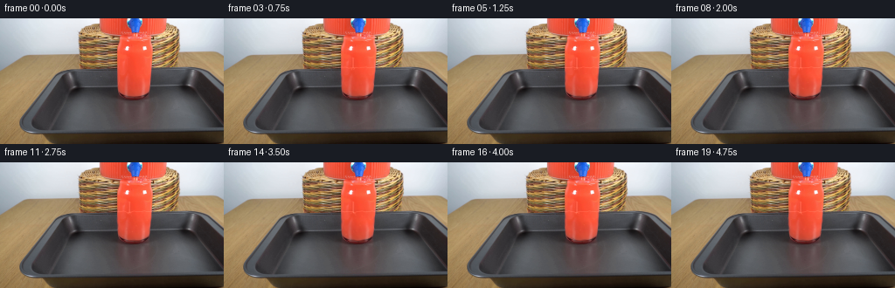
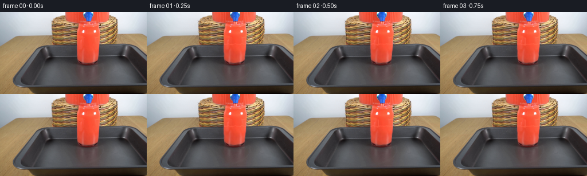
展开代码变化
--- 上一保存版本
+++ 本次保存版本
@@ -0,0 +1,183 @@
+from pathlib import Path
+
+import cv2
+import numpy as np
+from PIL import Image
+
+import artifact_io
+
+
+W, H = 256, 144
+N, FPS = 20, 4
+ROOT = Path(__file__).resolve().parent
+
+
+def glass_mask():
+ mask = np.zeros((H, W), dtype=np.uint8)
+ polygon = np.array(
+ [
+ [134, 54],
+ [173, 54],
+ [173, 70],
+ [171, 79],
+ [166, 86],
+ [159, 89],
+ [147, 89],
+ [141, 86],
+ [136, 80],
+ [133, 71],
+ ],
+ dtype=np.int32,
+ )
+ cv2.fillPoly(mask, [polygon], 255)
+ return mask.astype(np.float32) / 255.0
+
+
+def flowing_liquid(base, time_s, mask):
+ """Warp the source liquid with a smooth, low-amplitude internal flow."""
+ yy, xx = np.mgrid[0:H, 0:W].astype(np.float32)
+ x0, x1, y0, y1 = 130, 178, 52, 91
+ local_x = xx[y0:y1, x0:x1]
+ local_y = yy[y0:y1, x0:x1]
+ q = np.clip((local_y - 55.0) / 33.0, 0.0, 1.0)
+ h = (local_x - 147.5) / 21.0
+
+ phase = 2.0 * np.pi * time_s
+ dx = (
+ 0.42 * np.sin(phase * 0.43 + q * 8.0 + h * 1.7)
+ + 0.20 * np.sin(phase * 0.71 - local_y * 0.72)
+ )
+ dx *= 0.72 + 0.28 * np.sqrt(np.maximum(0.0, 1.0 - h * h))
+ dy = (
+ 0.38 * np.sin(phase * 0.58 + local_x * 0.48)
+ + 0.18 * np.sin(phase * 0.31 + local_y * 0.36)
+ ) * (0.55 + 0.45 * q)
+
+ map_x = local_x + dx
+ map_y = local_y + dy
+ warped = cv2.remap(
+ base,
+ map_x,
+ map_y,
+ interpolation=cv2.INTER_LINEAR,
+ borderMode=cv2.BORDER_REFLECT_101,
+ )
+
+ # A slow vertical pressure wave keeps the otherwise uniform red liquid alive.
+ shade = 1.0 + 0.016 * np.sin(phase * 0.52 + q * 8.0 - h * 1.2)
+ warped = np.clip(warped.astype(np.float32) * shade[..., None], 0, 255)
+
+ out = base.astype(np.float32).copy()
+ local_mask = mask[y0:y1, x0:x1, None]
+ out[y0:y1, x0:x1] = (
+ warped * (0.74 * local_mask)
+ + base[y0:y1, x0:x1].astype(np.float32) * (1.0 - 0.74 * local_mask)
+ )
+ return out
+
+
+def add_surface_and_stream(out, time_s, mask):
+ phase = 2.0 * np.pi * time_s
+ yy, xx = np.mgrid[0:H, 0:W].astype(np.float32)
+ inside = mask > 0.5
+
+ # The continuous inflow makes a compact, oscillating depression at the tap.
+ impact = np.exp(-((xx - 147.5) / 4.4) ** 2)
+ waterline = (
+ 55.8
+ + 0.36 * np.sin(2.0 * np.pi * (xx - 147.5) / 12.0 + phase * 0.86)
+ + 0.18 * np.sin(2.0 * np.pi * (xx - 147.5) / 5.8 - phase * 1.17)
+ + impact * (0.48 + 0.28 * np.sin(phase * 1.55))
+ )
+
+ # A thin moving surface highlight follows the height field.
+ surf = np.exp(-((yy - waterline) / 0.55) ** 2)
+ surf *= inside
+ out += surf[..., None] * np.array([15.0, 17.0, 16.0], dtype=np.float32)
+
+ # Bright, slightly wavy falling column at the center of the tap.
+ ramp = np.clip((time_s - 0.16) / 0.45, 0.0, 1.0)
+ center = 147.6 + 0.16 * np.sin(phase * 1.25)
+ stream_width = 0.90 + 0.10 * np.sin(phase * 2.0 + yy * 0.4)
+ stream = np.exp(-((xx - center) / stream_width) ** 2)
+ stream *= (yy >= 45.0) & (yy <= waterline + 0.6)
+ stream *= ramp
+ out += stream[..., None] * np.array([12.0, 24.0, 26.0], dtype=np.float32)
+
+ # Darker menisci on either side give the stream a round cross-section.
+ edge = np.exp(-((xx - (center - 1.55)) / 0.52) ** 2)
+ edge += np.exp(-((xx - (center + 1.55)) / 0.52) ** 2)
+ edge *= (yy >= 47.0) & (yy <= waterline)
+ out -= edge[..., None] * np.array([5.0, 2.0, 1.0], dtype=np.float32) * ramp
+
+ # Impact foam: a few sub-pixel-scale pale glints, not a large white splash.
+ for j in range(5):
+ angle = 2.0 * np.pi * (j / 5.0) + phase * (0.18 + 0.03 * j)
+ cx = center + (1.7 + 0.7 * (j % 2)) * np.cos(angle)
+ cy = waterline + 0.9 + 1.0 * (j % 2) + 0.30 * np.sin(phase * 1.6 + j)
+ r = 0.55 + 0.18 * (j % 3)
+ foam = np.exp(-((xx - cx) ** 2 + (yy - cy) ** 2) / (r * r))
+ foam *= inside * ramp
+ out += foam[..., None] * np.array([9.0, 13.0, 12.0], dtype=np.float32)
+ return out
+
+
+def add_bubbles(out, time_s, mask):
+ yy, xx = np.mgrid[0:H, 0:W].astype(np.float32)
+ inside = mask > 0.5
+ # (initial x, initial y, rise speed, radius, phase)
+ bubbles = [
+ (140.0, 86.0, 1.10, 0.75, 0.1),
+ (145.0, 78.0, 0.78, 0.60, 1.4),
+ (151.0, 84.0, 1.36, 0.88, 2.7),
+ (156.0, 77.0, 0.92, 0.68, 0.8),
+ (164.0, 85.0, 1.22, 0.75, 3.1),
+ (143.0, 69.0, 1.02, 0.58, 2.0),
+ (158.0, 68.0, 0.70, 0.55, 4.0),
+ (168.0, 74.0, 1.08, 0.64, 5.0),
+ (137.0, 75.0, 0.84, 0.52, 3.6),
+ (150.0, 63.0, 0.68, 0.50, 1.1),
+ ]
+ start = np.clip((time_s - 0.35) / 1.1, 0.0, 1.0)
+ for i, (bx, by, speed, radius, phase0) in enumerate(bubbles):
+ travel = (by - 58.0) + 1.0
+ y = by - ((speed * time_s + i * 0.73) % travel)
+ x = bx + 0.62 * np.sin(time_s * (1.1 + 0.08 * i) + phase0)
+ # Keep tiny bubbles sparse and soft at this resolution.
+ pulse = 0.78 + 0.22 * np.sin(time_s * 2.2 + phase0)
+ d2 = (xx - x) ** 2 + (yy - y) ** 2
+ body = np.exp(-d2 / (radius * radius)) * inside * start * pulse
+ rim = np.exp(-((np.sqrt(d2) - radius * 0.78) / 0.36) ** 2) * inside * start * 0.55
+ out += body[..., None] * np.array([7.5, 12.0, 11.0], dtype=np.float32)
+ out -= rim[..., None] * np.array([2.0, 1.0, 1.0], dtype=np.float32)
+ return out
+
+
+def main():
+ base = np.asarray(Image.open(ROOT / "first_frame.png").convert("RGB"), dtype=np.uint8)
+ assert base.shape == (H, W, 3)
+ mask = glass_mask()
+
+ frames = np.empty((N, H, W, 3), dtype=np.uint8)
+ frames[0] = base
+ for index in range(1, N):
+ time_s = index / FPS
+ out = flowing_liquid(base, time_s, mask)
+ out = add_surface_and_stream(out, time_s, mask)
+ out = add_bubbles(out, time_s, mask)
+ out = np.clip(np.rint(out), 0, 255).astype(np.uint8)
+
+ # Never alter the glass rim, highlights at the very top, or the tray.
+ protect = (
+ (base[:, :, 0] > 238)
+ & (base[:, :, 1] > 180)
+ & (base[:, :, 2] > 175)
+ )
+ out[protect] = base[protect]
+ frames[index] = out
+
+ artifact_io.save(frames, ROOT)
+
+
+if __name__ == "__main__":
+ main()
候选 02播放与检查图
点击播放 · 原生 RGB 像素

展开代码变化
--- 上一保存版本
+++ 本次保存版本
@@ -95,19 +95,24 @@
surf *= inside
out += surf[..., None] * np.array([15.0, 17.0, 16.0], dtype=np.float32)
- # Bright, slightly wavy falling column at the center of the tap.
+ # Bright, slightly wavy inflow at the center of the tap. The nozzle is
+ # already below the liquid line, so the stream emerges from the tap mouth.
ramp = np.clip((time_s - 0.16) / 0.45, 0.0, 1.0)
- center = 147.6 + 0.16 * np.sin(phase * 1.25)
- stream_width = 0.90 + 0.10 * np.sin(phase * 2.0 + yy * 0.4)
+ center = 146.9 + 0.20 * np.sin(phase * 1.25)
+ stream_width = 1.15 + 0.12 * np.sin(phase * 2.0 + yy * 0.4)
stream = np.exp(-((xx - center) / stream_width) ** 2)
- stream *= (yy >= 45.0) & (yy <= waterline + 0.6)
+ stream *= (yy >= 35.8) & (yy <= waterline + 0.6)
stream *= ramp
- out += stream[..., None] * np.array([12.0, 24.0, 26.0], dtype=np.float32)
+ out += stream[..., None] * np.array([13.0, 30.0, 30.0], dtype=np.float32)
+
+ core = np.exp(-((xx - (center - 0.28)) / 0.48) ** 2)
+ core *= (yy >= 36.0) & (yy <= waterline)
+ out += core[..., None] * np.array([6.0, 18.0, 17.0], dtype=np.float32) * ramp
# Darker menisci on either side give the stream a round cross-section.
edge = np.exp(-((xx - (center - 1.55)) / 0.52) ** 2)
edge += np.exp(-((xx - (center + 1.55)) / 0.52) ** 2)
- edge *= (yy >= 47.0) & (yy <= waterline)
+ edge *= (yy >= 36.0) & (yy <= waterline)
out -= edge[..., None] * np.array([5.0, 2.0, 1.0], dtype=np.float32) * ramp
# Impact foam: a few sub-pixel-scale pale glints, not a large white splash.
可观测工具轨迹
实际执行的命令与返回图片。
命令 1exit 0
/bin/bash -c "pwd && rg --files -g '"'!*__pycache__*'"' -g '"'!*.pyc'"' | sed -n '1,200p'"
命令 2exit 0
/bin/bash -c "sed -n '1,240p' prompt.txt"
命令 3exit 0
/bin/bash -c "sed -n '1,280p' GENERATION_RULES.md"
命令 4exit 127
/bin/bash -c 'ls -la && file first_frame.png && git status --short'
命令 5exit 0
/bin/bash -c "python - <<'PY'
from PIL import Image
im=Image.open('first_frame.png')
print(im.size, im.mode)
for p in [(128,0),(128,40),(145,43),(139,72),(143,85),(142,110),(128,138),(230,100),(10,140)]:
print(p,im.getpixel(p))
PY"命令 6exit 0
/bin/bash -c "python - <<'PY' import importlib.util for m in ['numpy','PIL','scipy','cv2','skimage','imageio','matplotlib']: print(m, bool(importlib.util.find_spec(m))) PY"
命令 7exit 0
/bin/bash -c "sed -n '1,260p' artifact_io.py"
命令 8exit 0
/bin/bash -c "sed -n '1,260p' player_template.html"
命令 9exit 0
/bin/bash -c "python - <<'PY'
from PIL import Image
im=Image.open('first_frame.png')
im.crop((100,0,190,145)).resize((720,1160)).save('.tmp/center_zoom.png')
PY"命令 10exit 0
/bin/bash -c "python - <<'PY'
from PIL import Image
import numpy as np
im=np.array(Image.open('first_frame.png'))
# red-ish mask saturation and hue rough
r,g,b=im[:,:,0].astype(int),im[:,:,1].astype(int),im[:,:,2].astype(int)
m=(r>120)&(r>g*1.25)&(r>b*1.2)
ys,xs=np.where(m)
print('red bbox',xs.min(),ys.min(),xs.max(),ys.max(),'count',len(xs))
for y in [0,10,20,30,35,40,45,50,52,54,56,58,60,65,70,80,90,100,110,115,120,125,130,135,140]:
xs=np.where(m[y])[0]
if len(xs): print(y,xs.min(),xs.max(),len(xs))
PY"命令 11exit 0
/bin/bash -c "python - <<'PY'
from PIL import Image
import numpy as np
im=np.array(Image.open('first_frame.png'))
# print rough pixels at tap and glass bottom
for y in range(0,61,2):
vals=[]
for x in range(128,160,2):
r,g,b=im[y,x]
if int(r)>120 and int(r)>int(g)*1.2: vals.append('R')
elif int(r)>200 and int(g)>200: vals.append('W')
elif int(b)>120 and int(b)>int(r)*1.1: vals.append('B')
elif int(r)<60 and int(g)<60: vals.append('K')
elif int(r)>110 and int(g)>90 and int(b)<100: vals.append('T')
else: vals.append('.')
print(f'{y:3}', ''.join(vals))
PY"命令 12exit 0
/bin/bash -c "python - <<'PY'
from PIL import Image
im=Image.open('first_frame.png')
# enlarge two areas separately with nearest
for name,box in [('tap',(125,0,170,60)),('glass',(120,50,190,120)),('tray',(20,55,245,140))]:
im.crop(box).resize(((box[2]-box[0])*8,(box[3]-box[1])*8),Image.Resampling.NEAREST).save('.tmp/'+name+'.png')
PY"命令 13exit 0
/bin/bash -c "python - <<'PY'
from PIL import Image
import numpy as np
im=np.array(Image.open('first_frame.png')).astype(float)
# print RGB and HSV-ish near tap
for y in range(30,60):
print(y, [(x, tuple(im[y,x].astype(int))) for x in range(134,149)])
PY"命令 14exit 0
/bin/bash -c "python - <<'PY'
from PIL import Image,ImageDraw,ImageFont
im=Image.open('first_frame.png').resize((1024,576),Image.Resampling.LANCZOS)
d=ImageDraw.Draw(im)
# grid 10 original px = 40 scaled
for x in range(0,257,10):
xx=x*4
d.line((xx,0,xx,576), fill=(20,220,240), width=1)
d.text((xx+2,2),str(x),fill=(255,255,255))
for y in range(0,145,10):
yy=y*4
d.line((0,yy,1024,yy), fill=(20,220,240), width=1)
d.text((2,yy+1),str(y),fill=(255,255,255))
im.save('.tmp/grid.png')
PY"命令 15exit 0
/bin/bash -c "python - <<'PY'
from PIL import Image
im=Image.open('first_frame.png')
im.crop((125,38,180,85)).resize((1100,940),Image.Resampling.NEAREST).save('.tmp/spout_zoom.png')
PY"命令 16exit 0
/bin/bash -c "python - <<'PY'
from PIL import Image
import numpy as np
im=np.array(Image.open('first_frame.png'))
# color stats of likely red glass interior x135..172,y55..108
for y in [52,54,56,58,60,65,70,80,90,100,105,108,110]:
row=im[y,130:178]
print(y, [tuple(row[i]) for i in range(0,48,8)])
PY"命令 17exit 0
/bin/bash -c "python - <<'PY'
from PIL import Image
import numpy as np
im=np.array(Image.open('first_frame.png'))
# dump selected rows classification every x 120-185
for y in range(50,121,3):
s=''
for x in range(120,186):
r,g,b=map(int,im[y,x])
if r>200 and g<130 and b<130: c='R'
elif r>160 and r>g*1.4 and r>b*1.4: c='r'
elif max(r,g,b)<70: c='K'
elif max(r,g,b)>210 and min(r,g,b)>150: c='W'
elif abs(r-g)<20 and abs(g-b)<20: c='g'
elif r>g+15 and g>b+10: c='t'
else: c='.'
s+=c
print(f'{y:3} {s}')
PY"命令 18exit 0
/bin/bash -c "python - <<'PY'
from PIL import Image,ImageEnhance,ImageFilter
im=Image.open('first_frame.png').crop((110,25,200,140)).resize((720,920),Image.Resampling.NEAREST)
im=ImageEnhance.Contrast(im).enhance(1.3)
im=ImageEnhance.Brightness(im).enhance(1.4)
im.save('.tmp/glass_bright.png')
PY"命令 19exit 0
/bin/bash -c "python - <<'PY'
from PIL import Image
import numpy as np
im=np.array(Image.open('first_frame.png'))
for y in range(28,56):
print(y, [tuple(im[y,x]) for x in range(130,147)])
PY"命令 20exit 0
/bin/bash -c "python - <<'PY'
from PIL import Image
im=Image.open('first_frame.png')
im.crop((132,48,174,95)).resize((840,940),Image.Resampling.NEAREST).save('.tmp/surface_zoom.png')
PY"命令 21exit 0
/bin/bash -c "python - <<'PY'
from PIL import Image
import numpy as np
im=np.array(Image.open('first_frame.png'))
# classify colors carefully
for y in range(18,56):
s=''
for x in range(122,170):
r,g,b=map(int,im[y,x])
if r>220 and g<130 and b<110: c='R'
elif r>170 and g<110 and b<90: c='r'
elif b>100 and b>r*1.4: c='B'
elif r>220 and g>190 and b>185: c='W'
elif r>180 and g>120 and b<110: c='T'
elif max(r,g,b)<60: c='K'
elif max(r,g,b)<105: c='k'
elif abs(r-g)<20 and abs(g-b)<20: c='g'
elif r>g+20 and g>b+15: c='t'
else: c='.'
s+=c
print(f'{y:3} {s}')
PY"命令 22exit 0
/bin/bash -c 'python generate.py'
命令 23exit 0
/bin/bash -c "python - <<'PY'
from PIL import Image
import numpy as np
frames=[np.array(Image.open(f'frames/{i:02d}.png')) for i in range(20)]
for i in [0,1,3,5,8,11,15,19]:
Image.fromarray(frames[i]).crop((120,25,185,115)).resize((520,720),Image.Resampling.NEAREST).save(f'.tmp/f{i:02d}.png')
print('changed pixels per frame', [int(np.any(frames[i]"'!=frames[0],axis=2).sum()) for i in range(20)])
print('"'max diff', [int(np.abs(frames[i].astype(int)-frames[0].astype(int)).max()) for i in range(20)])
PY"命令 24exit 0
/bin/bash -c "command -v ffmpeg || true; command -v ffprobe || true; python - <<'PY'
import cv2
print('cv2', cv2.__version__)
PY"命令 25exit 0
/bin/bash -c "python - <<'PY'
from PIL import Image
import numpy as np
base=np.array(Image.open('first_frame.png'))
for idx in [3,8,19]:
im=np.array(Image.open(f'frames/{idx:02d}.png'))
print('frame',idx)
for y in range(43,60):
print(y, tuple(base[y,148]), tuple(im[y,148]), tuple(im[y,147]), tuple(im[y,149]))
PY"命令 26exit 0
/bin/bash -c "python - <<'PY'
from PIL import Image
import numpy as np
b=np.array(Image.open('first_frame.png')).astype(int)
for i in [3,8,19]:
im=np.array(Image.open(f'frames/{i:02d}.png')).astype(int)
d=np.clip((im-b)*5+128,0,255).astype('uint8')
Image.fromarray(d[25:115,120:185]).resize((520,720),Image.Resampling.NEAREST).save(f'.tmp/diff{i:02d}.png')
PY"命令 27exit 0
/bin/bash -c "python - <<'PY'
from PIL import Image
import numpy as np
im=np.array(Image.open('first_frame.png'))
# original around center: red color and values by row / key columns
for y in range(54,92):
print(y, ' '.join(f'{x}:{tuple(im[y,x])}' for x in [136,138,140,142,144,146,148,150,152,154,156,158,160,162,164,166,168,170]))
PY"命令 28exit 0
/bin/bash -c "python - <<'PY'
from PIL import Image
import numpy as np
b=np.array(Image.open('first_frame.png')).astype(int)
for i in [1,3,5,8,11,15,19]:
im=np.array(Image.open(f'frames/{i:02d}.png')).astype(int)
# luminance diff and channel diff stats in glass
d=im-b
m=(b[:,:,0]>120)&(b[:,:,0]>b[:,:,1]*1.25)
print(i,'mean',d[m].mean(0),'max',d[m].max(0),'changed>3',int((np.abs(d[m]).max(1)>3).sum()))
PY"命令 29exit 0
/bin/bash -c "python - <<'PY'
from PIL import Image
im=Image.open('first_frame.png')
im.crop((128,15,178,100)).resize((1000,1700),Image.Resampling.NEAREST).save('.tmp/top_precise.png')
PY"命令 30exit 0
/bin/bash -c "python - <<'PY'
from PIL import Image
import numpy as np
im=np.array(Image.open('first_frame.png'))
for y in range(18,95):
r,g,b=im[y].T
# red-dominant; use threshold broad
m=(r>140)&(r>g*1.55)&(r>b*1.45)&(g<150)
xs=np.where(m)[0]
# restrict around 110-200 to avoid wood
xs=xs[(xs>=110)&(xs<=200)]
if len(xs):
print(y, xs.min(), xs.max(), len(xs))
else: print(y,'-')
PY"命令 31exit 0
/bin/bash -c "python - <<'PY'
from PIL import Image
import numpy as np
im=np.array(Image.open('first_frame.png')).astype(float)
# compute approximate red content above surrounding per row in region x 132..176
for y in range(50,90):
a=im[y,135:171]
r=a[:,0]-(a[:,1]+a[:,2])/2
print(y, round(float(r.mean()),1), round(float(r.std()),1), int(a[:,0].mean()))
PY"命令 32exit 1
/bin/bash -c "python - <<'PY'
from PIL import Image
import numpy as np
im=np.array(Image.open('first_frame.png')).astype(float)
for y in range(52,90):
a=im[y,136:171]
# local horizontal gradient x
gx=np.abs(np.diff(a[:,0]))
gy=0 if y==52 else np.abs(im[y,136:171,0]-im[y-1,136:171,0])
print(y, round(float(gx.mean()),2), round(float(gy.mean()),2), round(float(a[:,0].mean()),1))
PY"命令 33exit 0
/bin/bash -c "python - <<'PY'
from PIL import Image
import numpy as np
im=np.array(Image.open('first_frame.png')).astype(float)
for y in range(52,90):
a=im[y,136:171]
gx=np.abs(np.diff(a[:,0]))
gy=np.zeros_like(gx) if y==52 else np.abs(im[y,136:171,0]-im[y-1,136:171,0])
print(y, round(float(gx.mean()),2), round(float(gy.mean()),2), round(float(a[:,0].mean()),1))
PY"命令 34exit 0
/bin/bash -c "python - <<'PY'
from PIL import Image
import numpy as np
im=np.array(Image.open('first_frame.png'))
for y in range(14,33):
print(y, [tuple(im[y,x]) for x in range(128,170,2)])
PY"命令 35exit 0
/bin/bash -c "python - <<'PY'
from PIL import Image, ImageDraw
import numpy as np
base=Image.open('first_frame.png').convert('RGB')
# create an annotated region at 8x with exact row lines and selected x labels
scale=8
crop=base.crop((125,45,180,95)).resize(((180-125)*scale,(95-45)*scale),Image.Resampling.NEAREST)
d=ImageDraw.Draw(crop)
for y in range(45,96,2):
yy=(y-45)*scale
d.line((0,yy,crop.width,yy),fill=(0,255,255),width=1)
d.text((1,yy+1),str(y),fill=(255,255,255))
for x in range(125,181,5):
xx=(x-125)*scale
d.line((xx,0,xx,crop.height),fill=(0,255,255),width=1)
d.text((xx+1,1),str(x),fill=(255,255,255))
crop.save('.tmp/surface_grid.png')
PY"命令 36exit 0
/bin/bash -c "python generate.py && python - <<'PY'
from PIL import Image
import numpy as np
frames=[np.array(Image.open(f'frames/{i:02d}.png')) for i in range(20)]
assert np.array_equal(frames[0],np.array(Image.open('first_frame.png').convert('RGB')))
for i in [1,3,5,8,11,15,19]:
Image.fromarray(frames[i]).crop((120,20,185,110)).resize((650,900),Image.Resampling.NEAREST).save(f'.tmp/g{i:02d}.png')
print('frames',len(frames),frames[0].shape)
PY"命令 37exit 0
/bin/bash -c "python - <<'PY'
from PIL import Image
import numpy as np
frames=[np.array(Image.open(f'frames/{i:02d}.png')).astype(float) for i in range(20)]
# mean abs differences between adjacent frames over center region
for i in range(1,20):
d=np.abs(frames[i]-frames[i-1])[25:95,125:180]
print(i, round(float(d.mean()),2), round(float(d.max()),1), int((d.max(2)>4).sum()))
PY"命令 38exit 0
/bin/bash -c "python - <<'PY'
from PIL import Image
im=Image.open('first_frame.png')
im.crop((20,45,240,140)).resize((1100,475),Image.Resampling.NEAREST).save('.tmp/tray_zoom.png')
PY"命令 39exit 0
/bin/bash -c "python - <<'PY'
from pathlib import Path
from PIL import Image
import numpy as np, json, base64
p=Path('.')
frames=sorted((p/'frames').glob('*.png'))
ims=[np.array(Image.open(f).convert('RGB')) for f in frames]
first=np.array(Image.open('first_frame.png').convert('RGB'))
assert len(ims)==20
assert all(x.shape==(144,256,3) for x in ims)
assert np.array_equal(ims[0],first)
assert all(np.any(x"'!=ims[0]) for x in ims[1:])
assert all(np.abs(x.astype(int)-ims[0].astype(int)).max()<=80 for x in ims[1:])
with np.load('"'pixels.npz') as z:
a=z['pixels']
print('pixels.npz',a.shape,a.dtype,int(a.min()),int(a.max()))
html=(p/'index.html').read_text()
print('index.html bytes',len(html),'has payload', '__DATA__' not in html,'ready marker', '__pixelReady' in html)
print('frame files',len(frames),'first identical',np.array_equal(ims[0],first),'nonblank',all(x.std()>10 for x in ims))
print('temporal changed pixel range',min(int(np.any(x"'!=ims[0],2).sum()) for x in ims[1:]),max(int(np.any(x!=ims[0],2).sum()) for x in ims[1:]))
PY'命令 40exit 0
/bin/bash -c "python - <<'PY' import importlib.util for m in ['playwright','selenium']: print(m,bool(importlib.util.find_spec(m))) PY command -v chromium || command -v chromium-browser || command -v google-chrome || true"
命令 41exit 130
/bin/bash -c "python - <<'PY'
from playwright.sync_api import sync_playwright
from pathlib import Path
url=Path('index.html').resolve().as_uri()
with sync_playwright() as p:
b=p.chromium.launch(headless=True)
page=b.new_page(viewport={'width':900,'height':500})
page.goto(url)
page.wait_for_function('window.__pixelReady === true')
page.locator('#seek').evaluate(\"el => { el.value = 19; el.dispatchEvent(new Event('input', {bubbles:true})); }\")
page.screenshot(path='.tmp/player_check.png', full_page=True)
print(page.locator('#time').inner_text())
b.close()
PY"命令 42exit 0
/bin/bash -c "ps -eo pid,ppid,stat,cmd | rg 'playwright|chrom|headless' | head -30"
命令 43exit 0
/bin/bash -c 'ls -lh generate.py index.html pixels.npz inspection.png transition_check.png frames/00.png frames/19.png && git status --short 2>/dev/null || true'
命令 44exit 0
/bin/bash -c "ls -la | sed -n '1,120p' && find frames -maxdepth 1 -type f | wc -l"
视觉工具实际返回图片 1

视觉工具实际返回图片 2
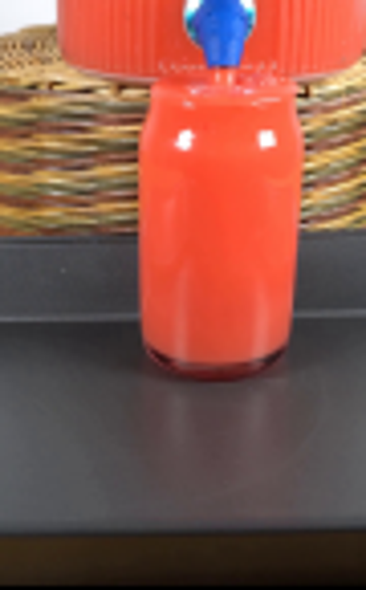
视觉工具实际返回图片 3
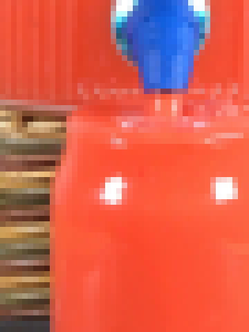
视觉工具实际返回图片 4
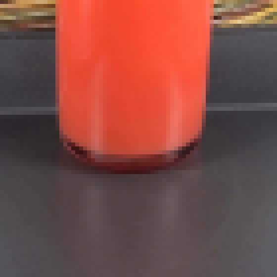
视觉工具实际返回图片 5
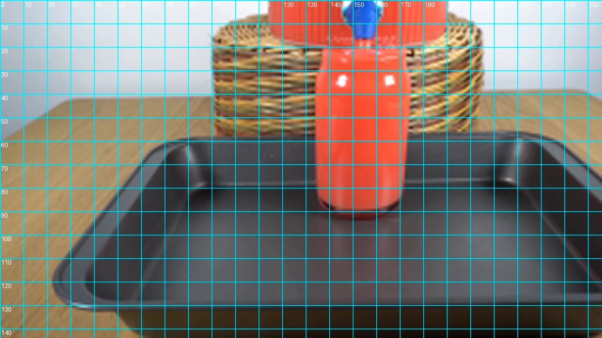
视觉工具实际返回图片 6
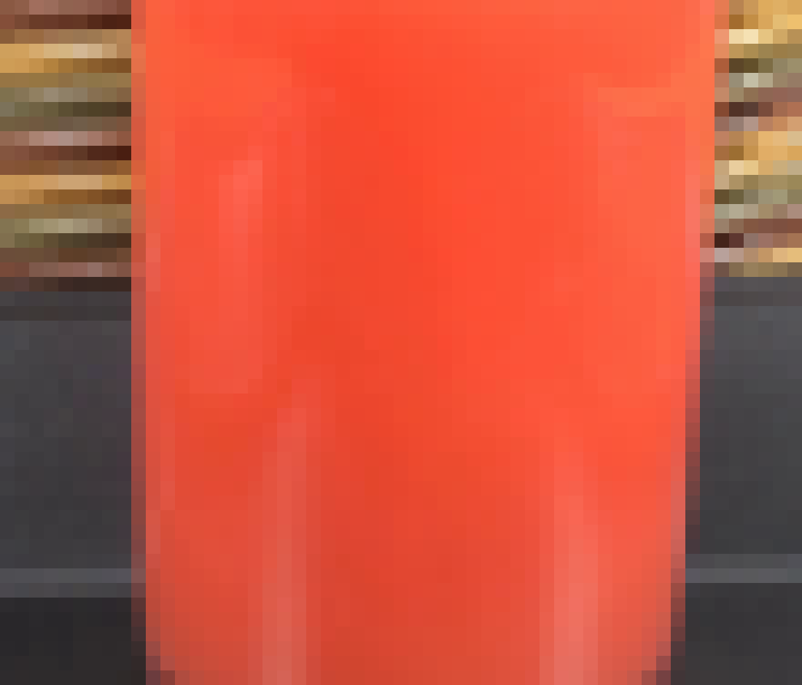
视觉工具实际返回图片 7
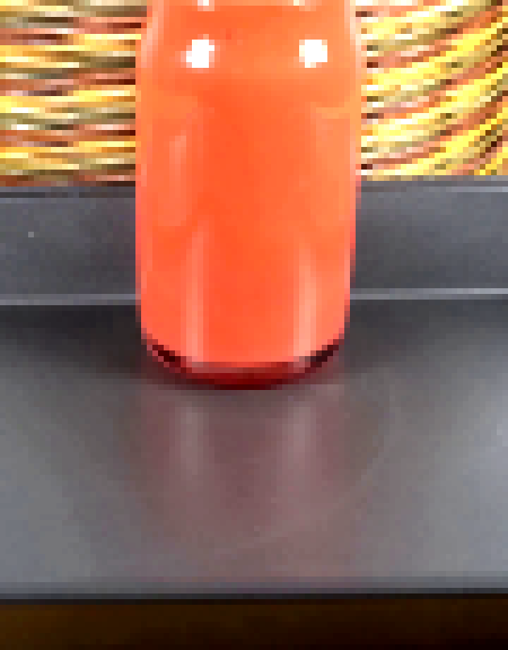
视觉工具实际返回图片 8
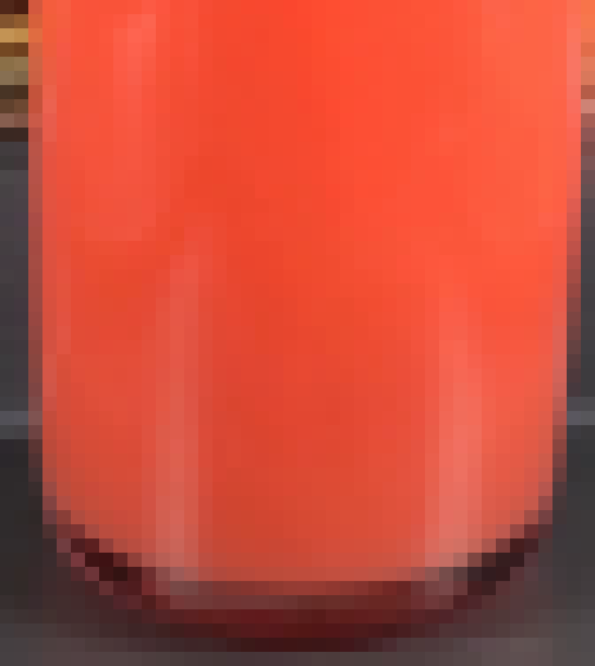
视觉工具实际返回图片 9

视觉工具实际返回图片 10
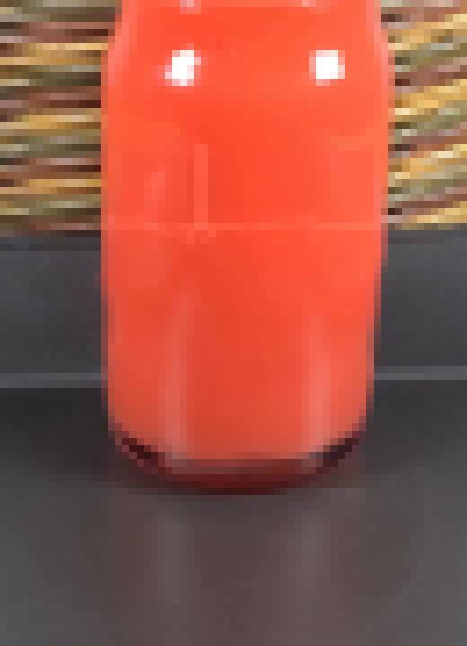
视觉工具实际返回图片 11
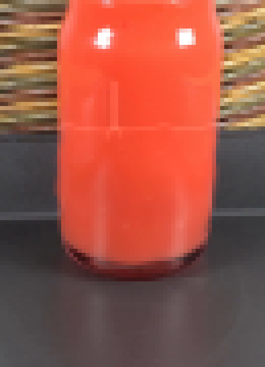
视觉工具实际返回图片 12
视觉工具实际返回图片 13

视觉工具实际返回图片 14
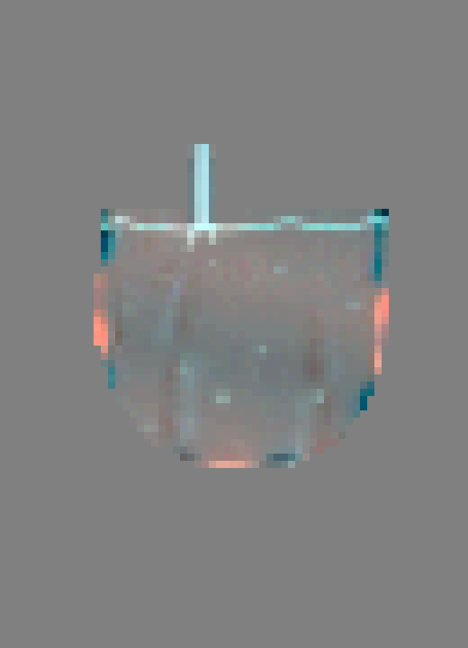
视觉工具实际返回图片 15
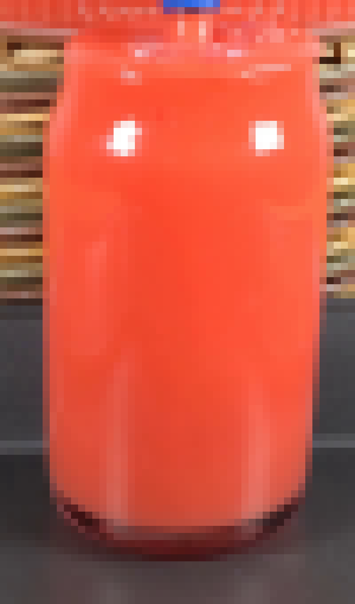
视觉工具实际返回图片 16
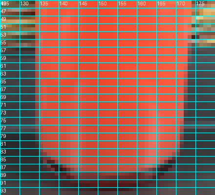
视觉工具实际返回图片 17
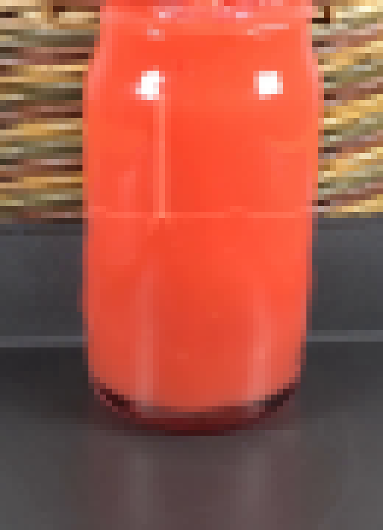
视觉工具实际返回图片 18
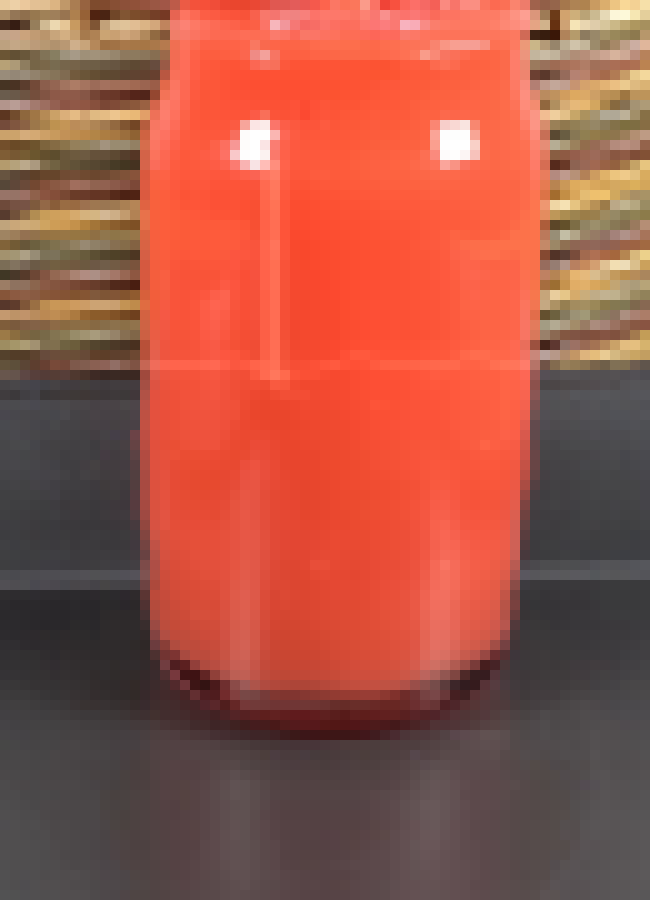
视觉工具实际返回图片 19
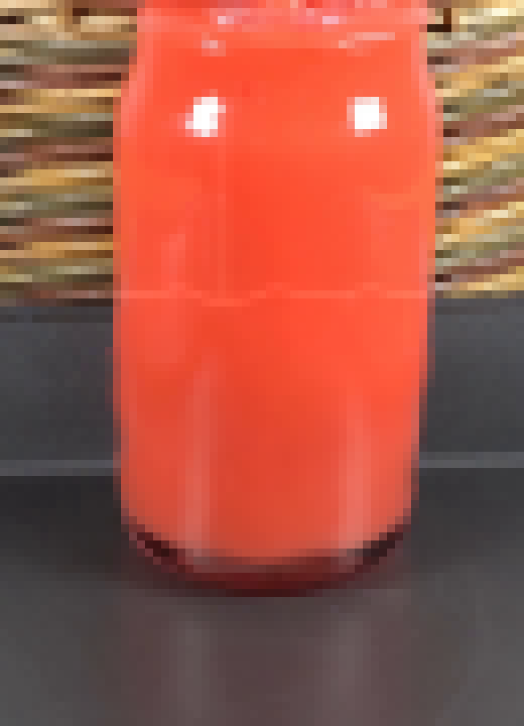
视觉工具实际返回图片 20
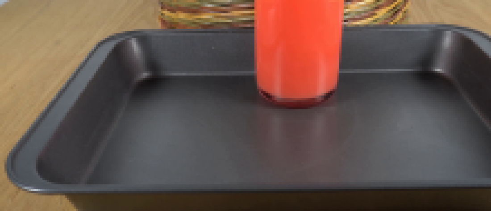
视觉工具实际返回图片 21
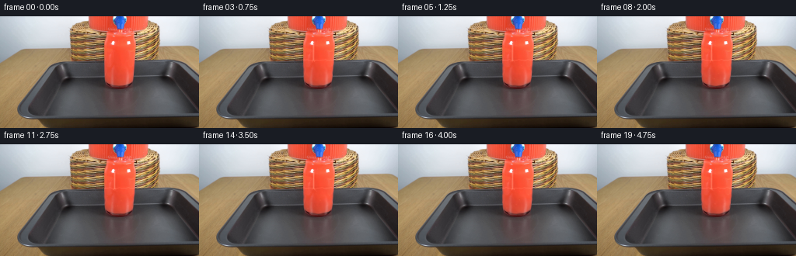
保存候选 2 份；完成命令 44 次；可验证图片返回 21 张。原始 API 响应与完整日志保留在本地。